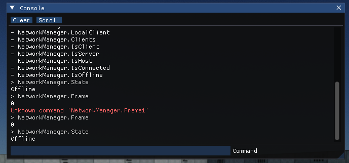

Debug Commands
DebugCommand is an attribute that can be placed on classes, fields, methods, and properties to expose them for configuration, modding, or tooling.
Tip
Only static members can be used in debug commands.
Access
Output Log

Output Log is Editor window that displays the full log. At the bottom of that window, there is an input command field that can be used to run commands. You can type commands with an automatic search popup that displays similar commands based on the entered value. Use arrow keys to navigate around that popup list. The tab key can be used to autocomplete commands based on the best-found match. Finally, when input is empty you can use the arrow up key to navigate around the command history and re-try one of them again.
In-game console

Debug Commands can appear within an in-game console or debug tooling. For example, Arizona Framework implements console via ImGui. Such tool can be useful when developing games for various platforms and devices such as consoles where game configurations can be tweaked at runtime.
DebugCommands API
Use DebugCommands class to execute or list debug commands within the project. It caches all commands for engine, game, and plugin projects.
Example usage:
Example
using FlaxEngine;
/// <summary>
/// Global gameplay configs.
/// </summary>
[DebugCommand]
public static class GameGlobals
{
/// <summary>
/// Disables player damage.
/// </summary>
public static bool GodMode = false;
}
/// <summary>
/// Player script.
/// </summary>
public class PlayerLogic : Script
{
/// <summary>
/// Player speed scale.
/// </summary>
[DebugCommand]
public static float SpeedScale = 1.0f;
/// <summary>
/// Restores player HP to max.
/// </summary>
[DebugCommand]
public static void HealPlayer()
{
//..
}
}